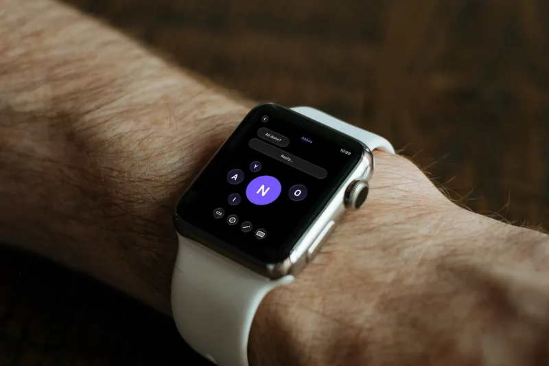
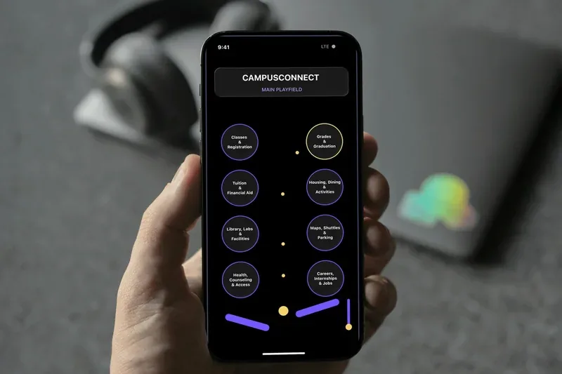
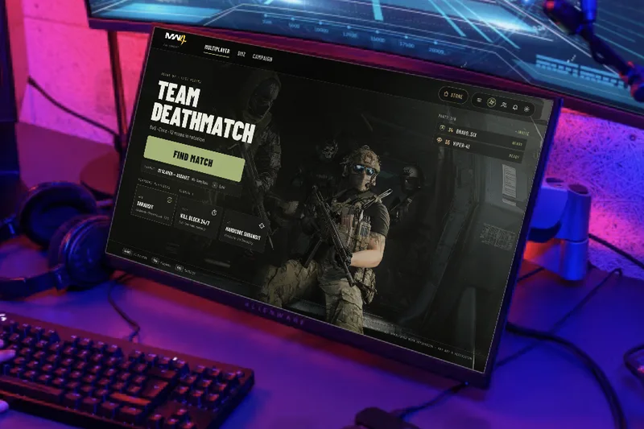

Predictive Bubble Keyboard Conceptual redesign of the Apple Watch keyboard READ CASE STUDY002 / WORK
DIGITAL ARCHIVE.
Case studies in interaction and visual design. Select a project to see more.
002 / WORK
Case studies in interaction and visual design. Select a project to see more.

Predictive Bubble Keyboard Conceptual redesign of the Apple Watch keyboard READ CASE STUDY
CampusConnect Radical redesign of campus app navigation READ CASE STUDY Lifeline
Speculative app about surveillance and control
READ CASE STUDY
Lifeline
Speculative app about surveillance and control
READ CASE STUDY

MW4 Menu Redesign Fan redesign of Call of Duty’s PC menus READ CASE STUDY